Student Information Manager
An Angular Web Application for Managing Department Student Records
- Joevan Delos Santos
- Jaztin Hart Alejo
- Richmon Ecal
- John Yzhekiel Millar
- Celine Licanda
1. Project Overview
1.1 Background and Problem Addressed
Academic departments and university registrars routinely manage student enrollment records across multiple degree programs and year levels. In small-scale or instructional settings, tracking student numbers, degree programs, academic standing (Active, Probation, On Leave, Graduated), cumulative GPA, and assigned faculty advisors using disconnected spreadsheets leads to formatting errors, inconsistent data entry, weak searchability, and broken cross-references between summary metrics and individual profiles.
1.2 Intended Users
- University Registrar Clerks: Register new students, update academic standing or GPA after each term, and maintain accurate contact and advisor details.
- Faculty Advisors: Search advisees quickly by name, student number, or advisor name, and inspect individual student dossiers during advising sessions.
- Department Coordinators: Review enrollment distribution by degree program (
BSCS,BSIT,BSIS,BSCE,BSECE) and year level (1st through 4th Year), then click directly into filtered student rosters.
1.3 Application Purpose
The Student Information Manager (SIM) provides a structured, API-connected Angular single-page application that centralizes student records with strict client-side validation, persistent CRUD operations via a REST API, instant multi-criteria search and filtering, and URL-driven routing between overview metrics, student rosters, and individual student dossiers.
↑ Back to top2. Objectives
2.1 General Objective
To design, develop, and verify an API-connected Angular 22 single-page application that enables an academic department to organize, search, filter, and persist student enrollment records while demonstrating core Angular concepts and an independent exploration of Angular Router.
2.2 Specific Objectives
- Architect a modular Angular application with at least four meaningful standalone components (
NavbarComponent,DashboardComponent,StudentListComponent, andStudentDetailComponent, hosted insideAppComponent) backed by an injectableStudentService. - Apply modern Angular control flow (
@if,@forwithtrack, and@switch), all four data-binding types (interpolation, property binding, event binding, and two-way binding), HTTP CRUD operations, and RxJS Observables consumed viasubscribe(). - Implement full Create, Read, Update, and Delete (CRUD) operations alongside multi-field search and course/year-level filtering backed by a writable local
json-serverREST API (db.json) so changes persist across browser refreshes. - Explore and integrate Angular Router using separate Dashboard, Student Directory, Registration, and Student Detail views, static-before-dynamic route precedence, URL-synchronized query parameters, programmatic navigation, document titles, and wildcard fallbacks.
- Deliver an accessible, responsive, high-contrast dark-mode interface covering all UI feedback states (loading skeletons, success banners, inline validation, empty states, and API error recovery), verified through automated Vitest tests and 10 live end-to-end test cases.
3. Scope and Limitations
3.1 Scope (Included Features)
- Academic Overview Dashboard (
/dashboard): Live computed metrics (Total Enrolled, Active Standing, Probation/On Leave, Mean Cumulative GPA), clickable program and year-level breakdowns, and recent registrations table. - Searchable & Filterable Student Directory (
/students): Real-time debounced search (name, student number, email, course, advisor) plus Course and Year Level dropdowns bidirectionally synchronized with URL query parameters (?q=,?course=,?yearLevel=). - Unified Student Record Workflows (
/students/new,/students/:id,/students/:id?edit=true): Validated registration form, read-only Academic Dossier, pre-filled edit mode, and safe record deletion with keyboard-accessible confirmation (Escapeto cancel). - Complete UI Feedback & Accessibility: Skeleton loading states, dismissible confirmation banners, inline validation messages, empty-database and empty-filter states, offline API error banners with Retry, and mobile responsive reflow.
- Automated & End-to-End Verification: 8 Vitest unit tests (
StudentServiceHTTP operations and route matching) plus 10 live browser end-to-end test cases.
3.2 Limitations
- Local Mock Persistence: Data is stored in a local
db.jsonfile served byjson-serverrather than a multi-user relational database (PostgreSQL/MySQL). Concurrent writes from multiple clients are not locked or transactional. - No Authentication or Role-Based Access Control (RBAC): Any user with access to the local development server can view, create, edit, and delete student records.
- Client-Side Search Projection: Because
json-serverv1 removed legacy?q=full-text search parameters, multi-field filtering executes in the RxJS pipeline insideStudentService.searchStudents()after fetching/students, which is suited for departmental cohorts rather than tens of thousands of records without server-side pagination. - Single-Term GPA Snapshot: The schema stores each student's current cumulative GPA rather than multi-semester transcript histories.
4. System Requirements
The table below lists the exact software, frameworks, libraries, and runtime tools used to develop, test, and run the Student Information Manager.
| Category | Software / Tool | Version Used | Purpose |
|---|---|---|---|
| Runtime Environment | Node.js | v24.19.0 (v20.19+ / v22+ compatible) | JavaScript runtime for Angular CLI and json-server |
| Package Manager | npm | 11.17.0 | Dependency installation and workspace script execution |
| Frontend Framework | Angular (@angular/core, common, forms, router, platform-browser) | ^22.1.0 | Standalone SPA components, Signals, Zoneless mode, Routing, Forms, HttpClient |
| CLI & Build System | @angular/cli & @angular/build | ^22.1.7 | Development server (ng serve), production builds (ng build), test runner |
| Programming Language | TypeScript | ~6.0.2 | Strict static typing for models, services, and components |
| Reactive Library | RxJS | ~7.8.0 | Observable streams and operators (switchMap, combineLatest, debounceTime, map, catchError) |
| Local Mock REST API | json-server | ^1.0.0-beta.15 | Writable local REST backend persisting records to db.json on port 3000 |
| Unit Testing | Vitest & jsdom | ^4.0.8 / ^28.0.0 | Automated unit testing for StudentService and AppComponent routing |
| Code Formatting | Prettier | ^3.8.1 | Consistent TypeScript, HTML, and CSS formatting |
| Browser & IDE | Chrome / Edge / Firefox & VS Code | Modern evergreen | Running the Angular app, DevTools inspection, and source editing |
5. Interface Plan
5.1 Design Direction
The interface uses a utilitarian, high-density dark zinc palette (#09090b canvas, #111113 surfaces, crisp 1px #27272a borders) paired with a single cobalt accent (#2563eb) and tabular monospace numbers (IBM Plex Mono)—prioritizing scannability, WCAG AA contrast, keyboard accessibility, and zero horizontal overflow on desktop and mobile viewports.
5.2 Initial Sketches
Wireframe sketches planning the sticky navigation shell, Academic Overview metric strip and breakdowns, Student Directory filter toolbar, and Student Detail dossier/form layout:
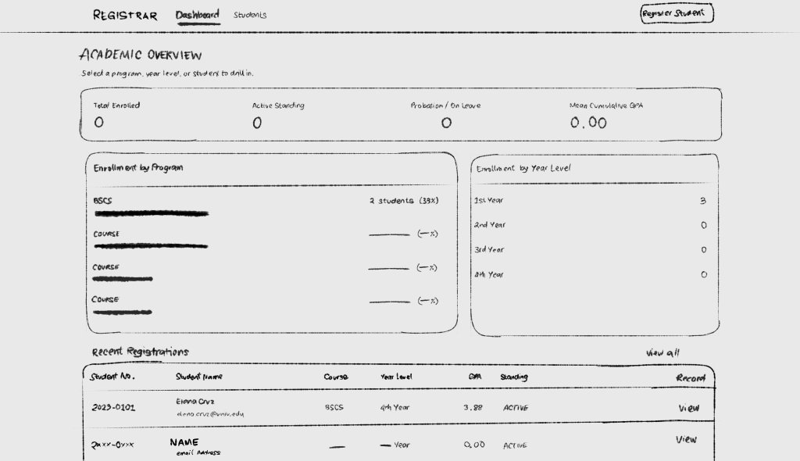
/dashboard) showing the navigation shell, KPI strip, program/year breakdowns, and recent registrations table.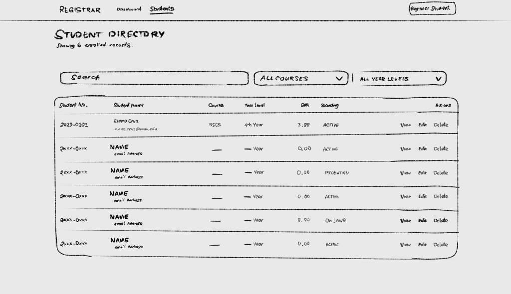
/students) showing the search input, course and year-level filter dropdowns, and roster action controls.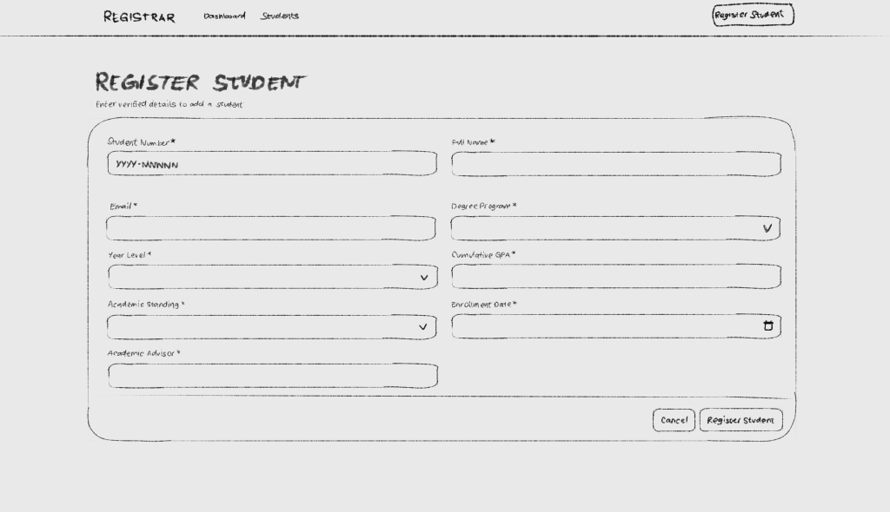
/students/new) outlining the two-column grid for all nine required student fields and submission controls.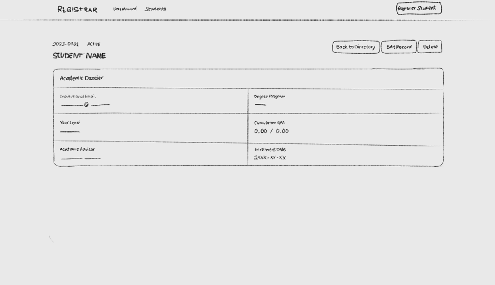
/students/:id) displaying the student header, record action buttons, and two-column academic profile grid.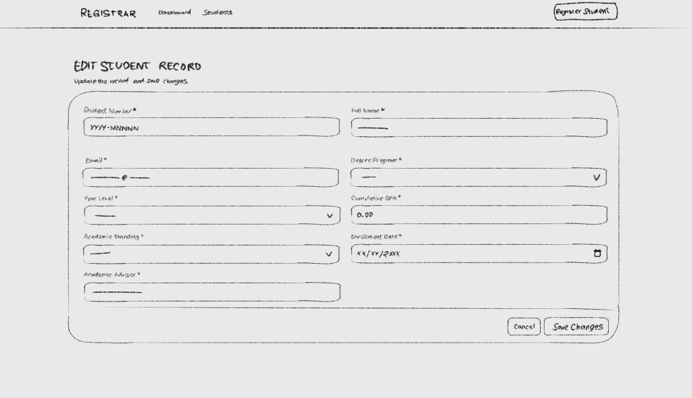
/students/:id?edit=true) featuring pre-filled form fields alongside Cancel and Save Changes actions.5.3 Final Screenshots
Captured screenshots of the running application across desktop and mobile viewports (Dashboard, Student Directory with active filters, Student Dossier, Registration/Edit validation states, and Delete confirmation):
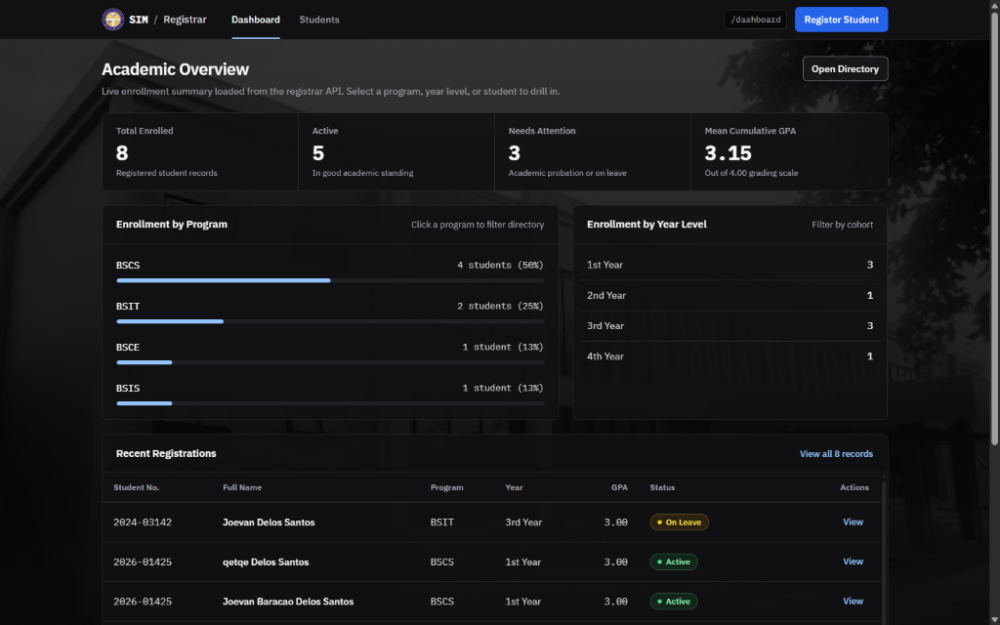
/dashboard) displaying live KPIs, program and year-level breakdowns, and recent registrations.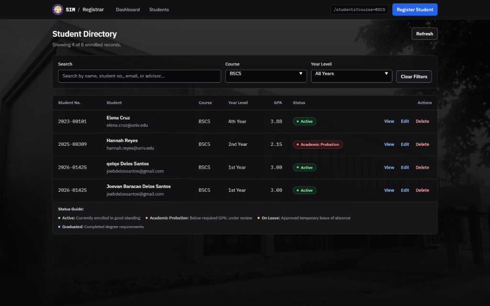
BSCS with URL synchronization (/students?course=BSCS) and the Clear Filters button.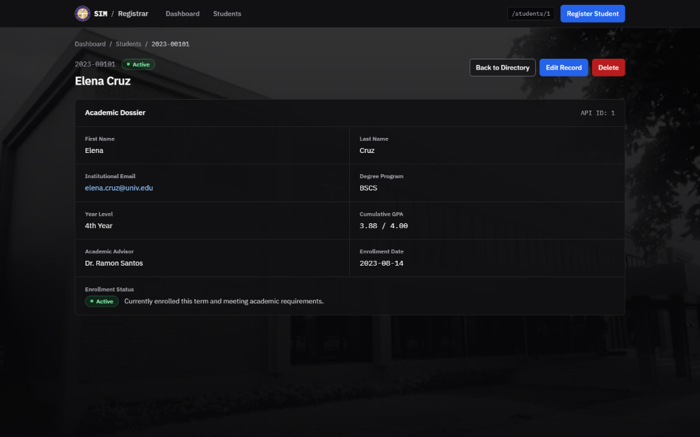
/students/1) displaying full student metadata alongside Edit Record and Delete actions.
/students/new) showing the summary alert banner and per-field inline validation messages.
Remove Student Record) guarding permanent deletion.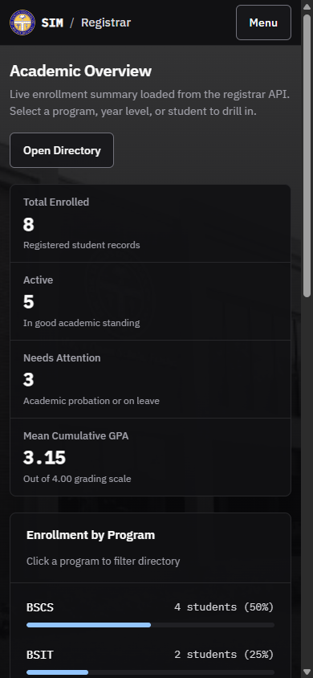
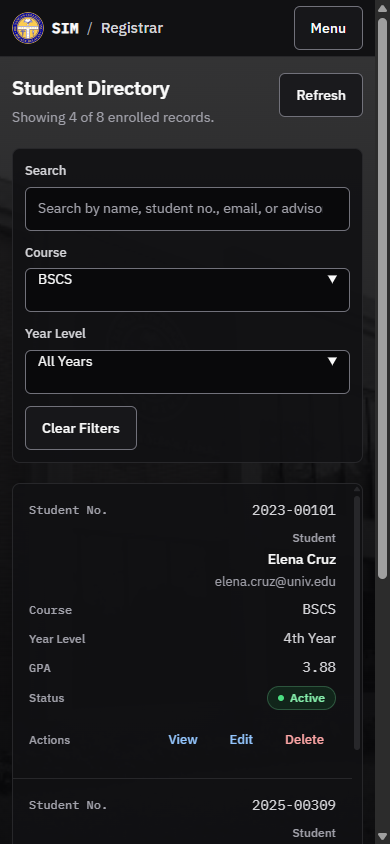
/students?course=BSCS) with stacked filter controls and card-style student rows.6. Application Structure
6.1 Directory Layout
StudentInformationManagement/
├── db.json # Local json-server database (5 seed students)
├── package.json # Dependencies and npm scripts (start, api, build, test)
├── package-lock.json # Exact dependency lockfile
├── README.md # Quick-start overview and route summary
├── src/
│ ├── index.html # Application shell and IBM Plex fonts
│ ├── main.ts # Standalone bootstrap entry point
│ ├── styles.css # Global WCAG AA dark-zinc tokens & shared table/button CSS
│ └── app/
│ ├── app.config.ts # ApplicationConfig: provideRouter + provideHttpClient
│ ├── app.routes.ts # Centralized Angular Router table
│ ├── app.component.{ts,html,css} # Root layout: skip-link, NavbarComponent, <router-outlet>
│ ├── app.component.spec.ts # Root shell & routing unit tests (2 specs)
│ ├── models/
│ │ └── student.model.ts # TypeScript interfaces & academic enum constants
│ ├── services/
│ │ ├── student.service.ts # Injectable HTTP CRUD + RxJS search & error handling
│ │ └── student.service.spec.ts # HttpTestingController unit tests (6 specs)
│ └── components/
│ ├── navbar/navbar.component.{ts,html,css}
│ ├── dashboard/dashboard.component.{ts,html,css}
│ ├── student-list/student-list.component.{ts,html,css}
│ └── student-detail/student-detail.component.{ts,html,css}
└── docs/
├── PROJECT_DOCUMENTATION.md # Complete Markdown documentation
└── PROJECT_DOCUMENTATION.html # Print-ready HTML for browser PDF export6.2 Component, Routing, Model, and Service Responsibilities
| Artifact | File Path | Core Responsibilities |
|---|---|---|
Root Shell (AppComponent) | src/app/app.component.ts | Hosts the accessibility skip link, persistent <app-navbar />, and primary <router-outlet /> container for all routed views. |
| Student Model | src/app/models/student.model.ts | Defines strict TypeScript types (Student, StudentPayload, StudentStatus, YearLevel, StudentFilterCriteria) and shared constants (COURSE_OPTIONS, YEAR_LEVEL_OPTIONS, STATUS_OPTIONS). |
| StudentService | src/app/services/student.service.ts | Root-injected singleton (providedIn: 'root') encapsulating all HTTP CRUD communication with http://localhost:3000/students (getStudents, getStudentById, searchStudents, addStudent, updateStudent, deleteStudent) and centralized HttpErrorResponse normalization. |
| App Routing & Config | src/app/app.routes.ts, src/app/app.config.ts | Declares all application routes, static-before-dynamic route precedence (/students/new before /students/:id), route data flags, browser <title> metadata, default empty-path redirect, wildcard fallback, and global providers (provideRouter, provideHttpClient). |
| NavbarComponent | src/app/components/navbar/navbar.component.ts | Persistent top navigation bar with routerLink destinations (Dashboard, Students, Register Student), active route underlines via routerLinkActive, live active path readout subscribed to Router.events (NavigationEnd), and an accessible mobile Menu drawer closable via Escape. |
| DashboardComponent | src/app/components/dashboard/dashboard.component.ts | Fetches live student records on initialization, derives summary figures (totalStudents, activeCount, attentionCount, averageGpa), renders clickable Course and Year Level breakdowns that programmatically navigate to pre-filtered /students URLs, and lists recent registrations with direct profile links. |
| StudentListComponent | src/app/components/student-list/student-list.component.ts | Full student directory supporting debounced RxJS search (Subject + debounceTime + switchMap), course and yearLevel dropdown filters synchronized bidirectionally with URL query parameters, loading/empty/error states, inline View/Edit routing, and guarded Delete confirmation (Escape to cancel). |
| StudentDetailComponent | src/app/components/student-detail/student-detail.component.ts | Multi-mode detail component driven by ActivatedRoute (data, paramMap, and queryParamMap). Renders the validated registration form (/students/new), read-only Academic Dossier (/students/:id), pre-filled edit form (/students/:id?edit=true), record deletion, and 404/network recovery states. |
7. Angular Topics Applied
7.1 Curriculum Topic Mapping
| Angular / RxJS Concept | Where Used in Code | Implementation Details |
|---|---|---|
Interpolation ({{ ... }}) | All 4 component templates | Renders live values such as {{ currentPath() }}, {{ totalStudents() }}, {{ averageGpa() | number: '1.2-2' }}, {{ student.fullName }}, {{ feedbackMessage() }}, and {{ breadcrumbLabel() }}. |
Property Binding ([...]) | All 4 component templates | Dynamically binds [routerLink]="['/students', student.id]", [queryParams]="{ edit: 'true' }", [style.width.%]="item.percentage", [disabled]="isSubmitting()", [attr.aria-expanded], [attr.aria-invalid], [ngValue], and [href]. |
Event Binding ((...)) | All 4 component templates + host metadata | Captures user events: (click)="openCourseFilter(item.course)", (click)="confirmDelete()", (ngSubmit)="submitForm(studentForm)", (ngModelChange)="onFiltersChanged()", and host keyboard listeners '(document:keydown.escape)'. |
Two-Way Binding ([(ngModel)]) | student-list.component.html, student-detail.component.html | Synchronizes filter controls ([(ngModel)]="searchTerm", selectedCourse, selectedYearLevel) and all 9 student registration/edit form fields ([(ngModel)]="formModel.*") with component state. |
Control Flow: @if / @else | navbar, student-list, student-detail | Conditionally renders the mobile menu drawer, confirmation banners, active filter reset button, delete alert dialog, and per-field validation messages. |
Control Flow: @for with track | dashboard, student-list, student-detail | Efficiently iterates over students (track student.id), course breakdowns (track item.course), year levels (track year.yearLevel), select options, and loading skeleton rows. |
Control Flow: @switch / @case / @default | dashboard, student-list, student-detail | Renders view states (loading, error, empty, empty-db, empty-filter, ready), detail page modes (create, view, edit), and semantic academic standing indicators. |
RxJS Observables & subscribe() | student.service.ts + all 4 components | Returns typed Observables (pipe(map, catchError)), executes debounced search (Subject + debounceTime(120) + switchMap), combines route streams (combineLatest + switchMap), and consumes responses explicitly with .subscribe({ next, error }) and takeUntilDestroyed. |
| Injected Angular Services & HTTP CRUD | student.service.ts, app.config.ts, dashboard, student-list, student-detail | Registers provideHttpClient(withFetch()), defines @Injectable({ providedIn: 'root' }) StudentService injected via inject(StudentService), and performs GET, POST, PUT, and DELETE against http://localhost:3000/students. |
| Angular Router | app.routes.ts, app.config.ts, app.component.html, all 4 components | Configures provideRouter(routes, withComponentInputBinding()), <router-outlet />, declarative routerLink / routerLinkActive, programmatic router.navigate, :id params, URL query params, route data, navigation state, and wildcard ** fallback. |
7.2 Relevant Code Excerpts
Excerpt 1: Interpolation, Property Binding, @for with track, and @switch (dashboard.component.html)
@switch (viewState()) {
@case ('ready') {
<div class="breakdown-list">
@for (item of courseBreakdown(); track item.course) {
<button type="button" class="breakdown-row" (click)="openCourseFilter(item.course)">
<div class="breakdown-top">
<span class="course-code mono">{{ item.course }}</span>
<span class="breakdown-count mono">
{{ item.count }} {{ item.count === 1 ? 'student' : 'students' }} ({{ item.percentage }}%)
</span>
</div>
<div class="bar-track" aria-hidden="true">
<div class="bar-fill" [style.width.%]="item.percentage"></div>
</div>
</button>
}
</div>
}
}Excerpt 2: Two-Way Binding ([(ngModel)]), Event Binding, and @if (student-list.component.html)
<input
id="student-search"
type="search"
class="control"
placeholder="Search by name, student no., email, or advisor..."
[(ngModel)]="searchTerm"
(ngModelChange)="onFiltersChanged()"
/>
@if (hasActiveFilters()) {
<div class="field-action">
<button type="button" class="btn" (click)="clearFilters()">Clear Filters</button>
</div>
}Excerpt 3: Template-Driven Form Validation & Inline Feedback (student-detail.component.html)
<input
id="studentNumber"
name="studentNumber"
type="text"
class="control mono"
required
pattern="^\d{4}-\d{4}$"
[(ngModel)]="formModel.studentNumber"
#studentNumberCtrl="ngModel"
[attr.aria-invalid]="studentNumberCtrl.invalid && (studentNumberCtrl.touched || formSubmitted())"
/>
@if (studentNumberCtrl.invalid && (studentNumberCtrl.touched || formSubmitted())) {
<span id="studentNumber-err" class="field-error" role="alert">
@if (studentNumberCtrl.errors?.['required']) {
Student number is required.
} @else {
Use format YYYY-NNNN (example: 2026-0142).
}
</span>
}Excerpt 4: Injected Service, HTTP CRUD, and RxJS Error Handling (student.service.ts)
@Injectable({ providedIn: 'root' })
export class StudentService {
private readonly http = inject(HttpClient);
private readonly apiUrl = 'http://localhost:3000/students';
getStudents(): Observable<Student[]> {
return this.http
.get<Student[]>(this.apiUrl)
.pipe(catchError((error: HttpErrorResponse) => this.handleError(error, 'load student records')));
}
addStudent(payload: StudentPayload): Observable<Student> {
return this.http
.post<Student>(this.apiUrl, payload)
.pipe(catchError((error: HttpErrorResponse) => this.handleError(error, 'create student record')));
}
updateStudent(id: string, payload: StudentPayload): Observable<Student> {
return this.http
.put<Student>(`${this.apiUrl}/${encodeURIComponent(id)}`, { id, ...payload })
.pipe(catchError((error: HttpErrorResponse) => this.handleError(error, 'update student record')));
}
deleteStudent(id: string): Observable<void> {
return this.http
.delete<void>(`${this.apiUrl}/${encodeURIComponent(id)}`)
.pipe(catchError((error: HttpErrorResponse) => this.handleError(error, 'delete student record')));
}
}Excerpt 5: Observables, combineLatest, switchMap, and subscribe() (student-detail.component.ts)
combineLatest([this.route.data, this.route.paramMap, this.route.queryParamMap])
.pipe(
switchMap(([data, params, queryParams]) => {
const routeMode = data['mode'] as string | undefined;
const id = params.get('id');
const editFlag = queryParams.get('edit') === 'true';
if (routeMode === 'create' || !id) {
this.pageState.set('create');
return of(null);
}
this.currentId.set(id);
this.pageState.set('loading');
return this.studentService.getStudentById(id).pipe(
map((record) => ({ record, targetState: (editFlag ? 'edit' : 'view') as 'view' | 'edit' })),
catchError((err: Error) => {
this.errorMessage.set(err.message);
this.pageState.set('error');
return of(null);
})
);
}),
takeUntilDestroyed(this.destroyRef)
)
.subscribe((result) => {
if (!result) return;
this.student.set(result.record);
this.populateForm(result.record);
this.pageState.set(result.targetState);
});Excerpt 6: Angular Router Configuration & Static Route Precedence (app.routes.ts)
export const routes: Routes = [
{ path: '', redirectTo: 'dashboard', pathMatch: 'full' },
{ path: 'dashboard', component: DashboardComponent, title: 'Dashboard | Student Information Manager' },
{ path: 'students', component: StudentListComponent, title: 'Student Directory | Student Information Manager' },
{ path: 'students/new', component: StudentDetailComponent, data: { mode: 'create' }, title: 'Register Student | Student Information Manager' },
{ path: 'students/:id', component: StudentDetailComponent, data: { mode: 'view' }, title: 'Student Record | Student Information Manager' },
{ path: '**', redirectTo: 'dashboard' }
];8. API Documentation
8.1 Server Configuration and Provider
- API Provider: Local
json-server(^1.0.0-beta.15) servingdb.json - Base URL:
http://localhost:3000 - Resource Collection:
/students - Start Command:
npm run api(executesjson-server db.json --port 3000) - Content Type:
application/json
8.2 Student Resource Schema (Data Fields)
| Field | Type | Constraints / Format | Example |
|---|---|---|---|
id | string | Unique identifier assigned by json-server on POST | "1" |
studentNumber | string | Required, pattern ^\d{4}-\d{4}$ | "2023-0101" |
fullName | string | Required, 3 to 80 characters | "Elena Cruz" |
email | string | Required, valid email address | "elena.cruz@univ.edu" |
course | string | Required (BSCS, BSIT, BSIS, BSCE, BSECE) | "BSCS" |
yearLevel | number | Required integer (1, 2, 3, or 4) | 4 |
gpa | number | Required decimal between 0.00 and 4.00 | 3.88 |
status | string | Required (Active, Probation, On Leave, Graduated) | "Active" |
enrolledDate | string | Required ISO date YYYY-MM-DD | "2023-08-14" |
advisor | string | Required, 3 to 80 characters | "Dr. Ramon Santos" |
8.3 Endpoints Reference
| Operation | HTTP Method | Endpoint | Success Status | Description |
|---|---|---|---|---|
| List all students | GET | /students | 200 OK | Returns the full array of student objects from db.json. |
| View single student | GET | /students/:id | 200 OK | Returns a single student matching id, or 404 Not Found. |
| Register student | POST | /students | 201 Created | Persists a new student record and returns the saved object with its generated id. |
| Update student | PUT | /students/:id | 200 OK | Replaces the full student record matching id and returns the updated object. |
| Delete student | DELETE | /students/:id | 200 OK | Permanently removes the student record matching id from db.json. |
8.4 Sample JSON Requests and Responses
GET /students (200 OK)
[
{
"id": "1",
"studentNumber": "2023-0101",
"fullName": "Elena Cruz",
"email": "elena.cruz@univ.edu",
"course": "BSCS",
"yearLevel": 4,
"gpa": 3.88,
"status": "Active",
"enrolledDate": "2023-08-14",
"advisor": "Dr. Ramon Santos"
},
{
"id": "2",
"studentNumber": "2024-0214",
"fullName": "Marco Villanueva",
"email": "marco.villanueva@univ.edu",
"course": "BSIT",
"yearLevel": 3,
"gpa": 3.42,
"status": "Active",
"enrolledDate": "2024-08-12",
"advisor": "Prof. Carla Mendoza"
}
]GET /students/1 (200 OK)
{
"id": "1",
"studentNumber": "2023-0101",
"fullName": "Elena Cruz",
"email": "elena.cruz@univ.edu",
"course": "BSCS",
"yearLevel": 4,
"gpa": 3.88,
"status": "Active",
"enrolledDate": "2023-08-14",
"advisor": "Dr. Ramon Santos"
}POST /students — Request Body
{
"studentNumber": "2026-0601",
"fullName": "Andrea Tolentino",
"email": "andrea.tolentino@univ.edu",
"course": "BSIT",
"yearLevel": 2,
"gpa": 3.74,
"status": "Active",
"enrolledDate": "2026-08-20",
"advisor": "Prof. Carla Mendoza"
}POST /students — Response (201 Created)
{
"id": "Kub7wECDAIQ",
"studentNumber": "2026-0601",
"fullName": "Andrea Tolentino",
"email": "andrea.tolentino@univ.edu",
"course": "BSIT",
"yearLevel": 2,
"gpa": 3.74,
"status": "Active",
"enrolledDate": "2026-08-20",
"advisor": "Prof. Carla Mendoza"
}PUT /students/Kub7wECDAIQ — Request Body & Response (200 OK)
{
"id": "Kub7wECDAIQ",
"studentNumber": "2026-0601",
"fullName": "Andrea Tolentino",
"email": "andrea.tolentino@univ.edu",
"course": "BSIT",
"yearLevel": 2,
"gpa": 3.91,
"status": "Probation",
"enrolledDate": "2026-08-20",
"advisor": "Prof. Carla Mendoza"
}DELETE /students/Kub7wECDAIQ — Response (200 OK)
{
"id": "Kub7wECDAIQ",
"studentNumber": "2026-0601",
"fullName": "Andrea Tolentino",
"email": "andrea.tolentino@univ.edu",
"course": "BSIT",
"yearLevel": 2,
"gpa": 3.91,
"status": "Probation",
"enrolledDate": "2026-08-20",
"advisor": "Prof. Carla Mendoza"
}Removes the matching student entry permanently from db.json.
Error Handling Responses
404 Not Found(e.g.,GET /students/999):StudentService.handleError()emits"The requested student record was not found."- Network Error (
status: 0) (whenjson-serveris offline):StudentService.handleError()emits"Cannot reach the local API server at http://localhost:3000. Start json-server and retry." - Client / Server Errors (
4xx/5xx): Normalized into readable alert banner messages.
9. Exploration Report: Angular Router
9.1 Feature Explored and Why It Is Useful
Our group explored Angular Router (@angular/router). Rendering every screen with conditional booleans inside one root component prevents bookmarking student profiles, sharing pre-filtered rosters, and using browser Back/Forward buttons. Angular Router maps URL paths, dynamic parameters (:id), and query parameters directly to standalone components rendered inside <router-outlet> with zero full-page reloads, per-route <title> synchronization, declarative active tab indicators, navigation state messaging, and wildcard fallbacks.
9.2 Sources Consulted
- Angular Official Routing Guide (
https://angular.dev/guide/routing) - Angular API Reference:
ActivatedRoute&Router(https://angular.dev/api/router/ActivatedRoute,https://angular.dev/api/router/Router) - Angular API Reference:
RouterLinkActive(https://angular.dev/api/router/RouterLinkActive) - Angular Zoneless & Signals Interop Guide (
https://angular.dev/guide/zoneless) - RxJS
switchMap&combineLatestDocumentation (https://rxjs.dev/api/operators/switchMap)
9.3 Experiment Performed
- Route Precedence Test: Verified first-match-wins behavior when static
students/newand dynamicstudents/:idshare/students/. - Same-Component Reuse Test: Navigated between
/students/new,/students/:id, and/students/:id?edit=truewhile reusingStudentDetailComponent. - Query Parameter Synchronization Test: Wired Dashboard drill-downs to
router.navigate(['/students'], { queryParams: { course } })and verified reload persistence. - Navigation State & Fallback Test: Verified
history.statebanners, 404 invalid IDs (/students/999), and wildcard fallback redirects (/does-not-exist).
9.4 Problems Occurred and How They Were Resolved
- Static vs. Parameterized Route Collision: Placing
students/:idahead ofstudents/newcaptured"new"as an ID and caused HTTP 404 errors. Resolved by orderingstudents/newstrictly abovestudents/:idwithdata: { mode: 'create' }. - Same-Component Reuse Without Re-Running
ngOnInit(): Snapshot reads failed when transitioning between create, view, and edit URLs. Resolved viacombineLatest([route.data, route.paramMap, route.queryParamMap])piped throughswitchMap()andtakeUntilDestroyed(). - Zoneless Angular 22 Change Detection: Mutating plain fields inside async subscriptions did not refresh the DOM reliably without
zone.js. Resolved by storing UI state in Signals (signal(),computed()). - Empty Query Parameters Polluting Browser History: Empty filter strings cluttered URLs and pushed extra Back entries. Resolved by mapping empty filters to
nullwithreplaceUrl: true.
9.5 How the Final Implementation Works
app.config.tsregistersprovideRouter(routes, withComponentInputBinding())andprovideHttpClient(withFetch()).app.routes.tsdeclares 6 routes (''→/dashboard,/dashboard,/students,/students/new,/students/:id, and**→/dashboard).NavbarComponentusesrouterLink,routerLinkActive, andRouter.events(NavigationEnd) to display the live path.DashboardComponentprogrammatically navigates into pre-filtered/studentsviews;StudentListComponentsyncsqueryParamMapbidirectionally;StudentDetailComponentswitches cleanly across create, view, and edit states.
10. Installation and User Guide
10.1 Installation Guide
1. Prerequisites Check
node -v
npm -v2. Install Dependencies
cd StudentInformationManagement
npm install3. Run Mock API & Angular Server (Two Concurrent Terminals)
# Terminal 1: Start json-server REST API on http://localhost:3000/students
npm run api
# Terminal 2: Start Angular dev server on http://localhost:4200
npm start4. Optional Verification & Build Commands
npx tsc --noEmit # Strict TypeScript check
npm test # Run Vitest unit tests
npm run build # Build production bundle into dist/10.2 End-User Guide
-
Inspecting the Academic Overview (
/dashboard): Review live enrollment KPIs (Total Enrolled, Active Standing, Probation/On Leave, Mean GPA). Click any program under Enrollment by Program or cohort under Enrollment by Year Level to drill into pre-filtered student rosters, or click a student name to inspect their dossier.
Figure 1: Academic Overview Dashboard ( /dashboard) displaying live KPIs, program and year-level breakdowns, and recent registrations. -
Searching and Filtering Records (
/students): Open Students in the navbar, enter keywords (name, student number, email, course, advisor), and filter by Course or Year Level. Active filters sync directly with the browser URL for reloading or bookmarking; click Clear Filters to reset.
Figure 2: Student Directory filtered by BSCSwith URL synchronization (/students?course=BSCS) and the Clear Filters control. -
Registering a New Student (
/students/new): Click Register Student, fill out all required fields (Student NumberYYYY-NNNN, Full Name, Email, Course, Year Level, GPA0.00–4.00, Standing, Enrollment Date, Advisor), and submit. Inline validation highlights any invalid fields before sending aPOSTrequest.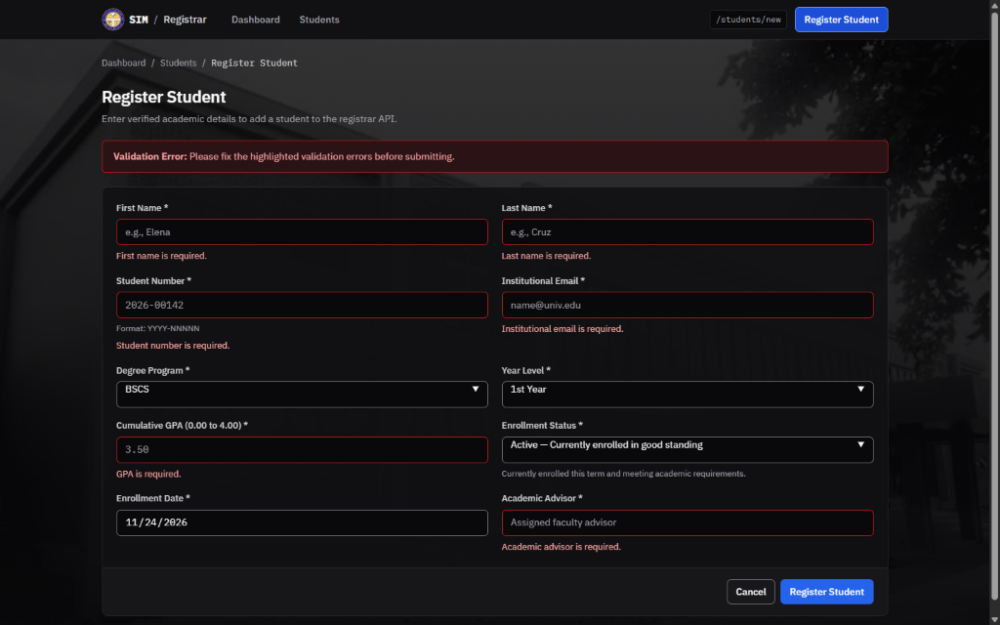
Figure 3a: Registration form ( /students/new) showing the validation summary banner and inline error feedback on incomplete or invalid fields.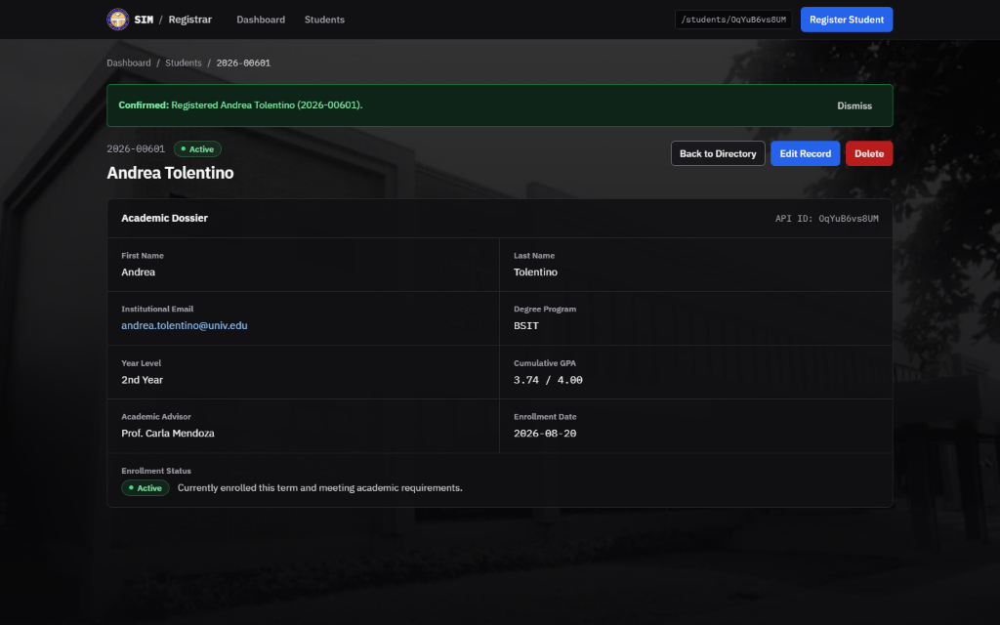
Figure 3b: Confirmation banner and saved Academic Dossier displayed immediately after a valid POST /studentsregistration. -
Viewing, Editing, and Deleting Records (
/students/:id): Click Edit Record (?edit=true) to update fields and save viaPUT. Click Delete from either the directory or dossier to open the keyboard-accessible confirmation dialog (pressEscapeto cancel or confirm to delete permanently). If the API is offline, restartnpm run apiand click Retry.
Figure 4a: Read-only Academic Dossier ( /students/1) providing direct navigation to Edit Record and Delete actions.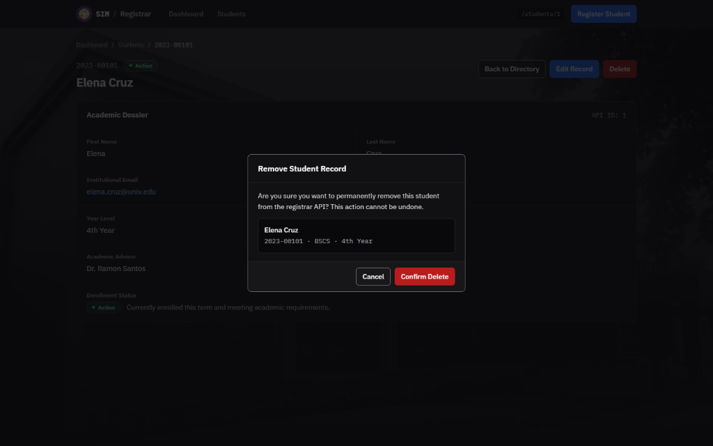
Figure 4b: Keyboard-accessible delete confirmation dialog ( Remove Student Record) requiring explicit confirmation before removing a record.
11. Testing Results
11.1 Automated Unit Tests (Vitest)
src/app/services/student.service.spec.ts: 6 passed / 6 total (GET list, multi-criteria search/filter, POST create, PUT update, DELETE remove, HTTP status 0 error mapping).src/app/app.component.spec.ts: 2 passed / 2 total (root shell rendering, default redirect/→/dashboard,/students/newprecedence, wildcard fallback/**→/dashboard).- Build & Typecheck:
npx tsc --noEmitexited0;npm run buildcompleted with 0 errors and 0 warnings (387.61 kBinitial bundle,97.16 kBtransfer).
11.2 End-to-End Functional Test Cases (10 Cases)
| Test ID | Category | Scenario & Steps | Expected Result | Actual Result | Status |
|---|---|---|---|---|---|
TC-01 | Routing & Load | Open http://localhost:4200/ and wait for GET /students. | Redirects to /dashboard; displays 5 students, 3 Active, 2 Probation/On Leave, Mean GPA 3.24, breakdowns, and 5 rows. | Redirected to /dashboard; rendered exact counts, 3.24, BSCS 2 (40%), and 5 recent rows. 0 console errors. | PASS |
TC-02 | Router Drill-Down | Click BSCS on Dashboard; then click Clear Filters. | Navigates to /students?course=BSCS (2 rows); clearing returns to /students (5 rows). | URL became /students?course=BSCS (Elena Cruz, Hannah Reyes); Clear Filters restored all 5 rows. | PASS |
TC-03 | Search & Empty State | Filter BSCS + 2nd Year; type zzzz-no-match; click Reset Filters. | Shows Hannah Reyes (?course=BSCS&yearLevel=2); non-match shows empty state; Reset restores 5 rows. | Matched Hannah Reyes; non-matching search showed "No matching students"; Reset restored all 5 rows. | PASS |
TC-04 | Input Validation | Submit blank form on /students/new; test ID 123, email not-an-email, GPA 4.9. | Blocks HTTP POST; shows validation banner and inline field errors. | Remained on /students/new; showed "Validation Error" banner and per-field inline errors. | PASS |
TC-05 | Create & Persist | Register Andrea Tolentino (2026-0601, BSIT, 2nd Year, GPA 3.74); reload browser. | Sends POST /students (201), navigates to /students/:newId with banner, persists on reload. | Created ID Kub7wECDAIQ, showed confirmation banner, and persisted identically after full reload. | PASS |
TC-06 | Update & Persist | Click Edit Record; change GPA to 3.91 & Standing to Probation; save and reload. | Appends ?edit=true, saves via PUT, returns to view mode with banner, persists on reload. | Saved via PUT, showed confirmation banner, 3.91 / 4.00, and Probation; persisted after reload. | PASS |
TC-07 | Delete & Escape | Click Delete on Andrea Tolentino; press Escape; click Delete again and confirm. | Escape cancels safely; confirming sends DELETE /students/:id and restores count to 5. | Escape dismissed dialog (count remained 6); confirming deleted record and restored count to 5. | PASS |
TC-08 | Invalid Param | Navigate directly to /students/999; click Back to Student Directory. | Handles 404 gracefully with error panel and return link to /students. | Displayed "The requested student record was not found." and navigated cleanly back to /students. | PASS |
TC-09 | Wildcard & Mobile | Open /does-not-exist; verify 390x844 & 768x1024 viewports; toggle mobile Menu + Escape. | Redirects to /dashboard; zero overflow; mobile drawer toggles and closes via Escape. | Redirected to /dashboard; 0 horizontal overflow on mobile & tablet; drawer toggled and closed on Escape. | PASS |
TC-10 | API Failure & Retry | Stop json-server; load /dashboard & /students; restart API and click Retry. | Displays actionable offline banner citing http://localhost:3000; Retry restores all 5 rows. | Rendered red offline alert banners with 0 console errors; clicking Retry after restart loaded all 5 records. | PASS |
12. Member Contribution Report and Individual Reflections
12.1 Signed Member Contribution Table
All group members actively participated in exploring Angular Router, contributing code, reviewing changes, and studying the full application for individual defense questioning.
| Member's Name | Assigned Tasks | Actual Contributions | Files/Features Developed | Signature |
|---|---|---|---|---|
| Joevan Delos Santos | Project coordination, component structure, and integration | Coordinated team milestones, designed standalone component architecture, configured Angular Router & HTTP providers, built root shell & sticky navbar with live path indicator, and led integration across all pages. | src/app/app.config.ts, src/app/app.routes.ts, src/app/app.component.*, src/app/components/navbar/* |
__________________ |
| Jaztin Hart Alejo | Interface, forms, data binding, and styling | Designed global WCAG AA dark-zinc CSS tokens, built responsive breakpoints and mobile table-to-card reflow, implemented template-driven student registration/edit forms, two-way [(ngModel)] bindings, and inline validation feedback. |
src/styles.css, src/app/components/dashboard/*, src/app/components/student-detail/student-detail.component.{html,css} |
__________________ |
| Richmon Ecal | Services, API integration, and data persistence | Defined TypeScript student models/enums, built root-injected StudentService with full HttpClient CRUD, RxJS multi-criteria search projection, centralized HttpErrorResponse translation, and json-server db.json persistence. |
src/app/models/student.model.ts, src/app/services/student.service.ts, db.json, package.json (api script) |
__________________ |
| John Yzhekiel Millar | Testing, verification, and directory filter integration | Implemented URL-synced debounced search and Course/Year filters in the Student Directory, authored automated Vitest specs for StudentService and route matching, and verified persistence and offline recovery behavior. |
src/app/components/student-list/*, src/app/services/student.service.spec.ts, src/app/app.component.spec.ts |
__________________ |
| Celine Licanda | Documentation coordination, QA testing, and verification | Executed all 10 live end-to-end test cases (TC-01–TC-10), verified responsive accessibility and keyboard flows (Escape dismissal), authored API & Router documentation sections, and coordinated final PDF & slide deliverables. |
docs/PROJECT_DOCUMENTATION.md, docs/PROJECT_DOCUMENTATION.html, README.md, QA verification (TC-01–TC-10) |
__________________ |
12.2 Individual Reflections
Joevan Delos Santos — Coordination, Routing, and Integration
Working on this project really helped me understand the new Angular standalone setup. Not using NgModules and just using provideRouter() made connecting the pages very easy. The biggest problem I had was a routing error. When we clicked "Register Student", it gave a 404 error. This happened because the router read the students/:id link before the students/new link. I moved the static route to the top and it fixed the bug. My main work was setting up the root files, configuring the routes, and making sure everyone's work connected together well.
Jaztin Hart Alejo — Interface, Forms, and Styling
I focused on the design and how the application looks. It was surprisingly hard to make it look good on mobile phones. Putting a big data table and a nine-field form on a small screen needed a lot of CSS changes. I made custom rules so the table rows turn into small cards, which stopped the screen from overflowing sideways. Also, using two-way data binding with Angular directives helped me show the loading messages properly. Adding aria-invalid to help with accessibility was a good learning experience for me.
Richmon Ecal — Services, API, and Persistence
My main task was putting all the backend communication inside the StudentService. By using @Injectable and RxJS observables, I kept our user interface completely separate from the direct HTTP links. We had an unexpected issue when the new json-server update removed the old full-text search feature. Because of this, our search filter stopped working. I fixed it by writing a custom search function using the map() operator. This task really helped me learn how to handle data from the API safely.
John Yzhekiel Millar — Directory Filters and Automated Testing
While making the project, I saw a big problem with the browser history. If a user typed or deleted words in the search filter quickly, it added many empty parameters to the URL. Because of this, the user had to click the back button many times just to leave the page. I fixed this by adding replaceUrl: true in the routing code so the history stays clean. Doing this fix and writing the Vitest automated tests taught me how to use RxJS tools like debounceTime so we don't send too many requests to the server.
Celine Licanda — End-to-End QA and Documentation
Testing the application manually gave me an important view on how it actually works. While testing different things, I found a bug where going straight to a newly created student profile did not show the new data. This happened because the page was reading the old route data instead of refreshing. I wrote this down so the team could fix it using a reactive combineLatest method. Other than checking all our ten test cases and keyboard usage, I was the one who arranged and typed the final project documentation to make sure we met all the school requirements.
13. Conclusion and Recommendations
13.1 Accomplishments
Group 1 successfully delivered the Student Information Manager, a fully functional, API-connected Angular 22 single-page application that fulfills every functional, architectural, and exploration requirement. The application supports persistent CRUD operations, real-time multi-criteria search and filtering, URL-driven navigation across separate Dashboard, Directory, Registration, and Student Detail views, responsive dark-mode styling, and complete loading/empty/validation/error feedback—backed by 8 passing Vitest specs and 10 passing end-to-end test cases.
13.2 Key Lessons Learned
- Designing routes deliberately—placing static segments above dynamic
:idparameters and subscribing reactively toActivatedRoutestreams—prevents subtle navigation and component-reuse bugs. - Keeping all API calls inside an injected service (
StudentService) and binding UI state through Signals makes zoneless Angular 22 apps predictable, testable, and resilient to network failures. - Synchronizing search and filter controls with URL query parameters dramatically improves usability by making filtered views reload-safe and bookmarkable.
13.3 Recommendations for Future Improvements
- Production Backend & Relational Database: Replace
json-server(db.json) with a transactional REST API (e.g., Node.js/Express or ASP.NET Core with PostgreSQL) to support concurrent multi-user writes, server-side pagination, and indexed full-text search. - Authentication & Role-Based Access Control (RBAC): Add login authentication and Angular route guards (
CanActivateFn) so Registrar Clerks have write privileges while Faculty Advisors have read-only access. - Per-Semester Academic History & Uniqueness Enforcement: Expand the schema to track semester-by-semester transcripts and enforce server-side uniqueness checks on
studentNumberandemail. - Data Export & Reporting: Add CSV/PDF roster export from the filtered Student Directory for registrar reporting.
14. References
Official Documentation & Tutorials
- Angular Team. Routing in Angular — Official Guide. https://angular.dev/guide/routing
- Angular Team.
ActivatedRouteAPI Reference. https://angular.dev/api/router/ActivatedRoute - Angular Team.
RouterandRouterLinkActiveAPI Reference. https://angular.dev/api/router/Router - Angular Team. Angular Zoneless Change Detection & Signals Guide. https://angular.dev/guide/zoneless
- Angular Team. HTTP Client (
provideHttpClient) Guide. https://angular.dev/guide/http - RxJS Team. RxJS Overview & Operators (
switchMap,combineLatest,debounceTime,catchError). https://rxjs.dev/guide/overview - Typicode.
json-server— Full Fake REST API Documentation. https://github.com/typicode/json-server - Vitest Team. Vitest Testing Framework Documentation. https://vitest.dev/guide/
Typography, Icons, and Visual Assets
- IBM Corporation. IBM Plex Sans & IBM Plex Mono Typefaces (loaded via Google Fonts in
src/index.html). https://fonts.google.com/specimen/IBM+Plex+Sans - Brand Icon (
SIM / Registrar): Custom inline geometric SVG authored directly insrc/app/components/navbar/navbar.component.html(no third-party stock images used).